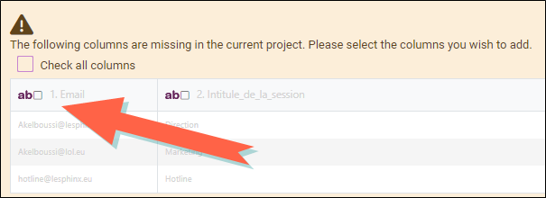

Update the data file
If new responses are collected, the study can be updated by importing the new data from different sources: CSV file, XLSX file, SPSS file, Triple-S file or from a Sphinx iQ survey (.zip archive).
To update the data file:
-
Go to the Data section, File import tab, then click on the source you want to use.
-
Then click on the Select file... button to add your data file.

NOTE: Variables that do not exist in the current study can be added. To do this, simply tick the columns (variables) to be added to the study.

-
Select the method to be used to update your data file:
-
Replace existing data: All existing data is replaced by the imported data.
This method deletes all the data currently in the study and replaces it entirely with the new data you are importing. This means that the old data will be lost and only the new data will be retained.
EXAMPLE: Let's imagine that your current study contains responses collected in January. You now have a new file containing responses collected in February. By choosing this option, all the January responses will be deleted and only the February responses will be imported and visible in your study.
-
Add to existing data: All imported data is added to the existing data.
This method adds the new imported data to the existing data in the study without deleting the old data. This allows the old and new responses to be combined in a single data set.
EXAMPLE: Suppose you currently have 100 responses in your study. You import a new file with 50 additional responses. After importing, the study will contain a total of 150 responses, combining the 100 old responses with the 50 new ones.
-
Update existing data (using a pivot variable): Observations whose pivot value is detected are updated, observations whose pivot value does not exist in the existing data are added.
This method updates existing data in the study by using a specific variable, called a pivot variable, to identify the observations to be updated. Observations in the new data file that match the values of the pivot variable in the existing study will be updated. New observations whose pivot variable values are not present in the existing data will be added as new observations.
EXAMPLE: Let's take a study with responses identified by a unique "Customer_ID" variable. Your study currently contains responses with "client_IDs" ranging from 1 to 100. You import a file containing updated responses for "Customer_IDs" from 90 to 100 and new responses for "Customer_IDs" from 101 to 150. Using this option, responses for "Customer_IDs" from 90 to 100 will be updated with the new information, and responses for "Customer_IDs" from 101 to 150 will be added as new observations.
-
-
Click the Update study button to finalize the import.